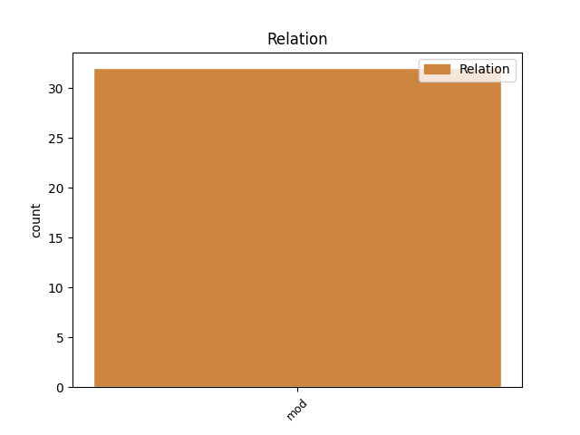
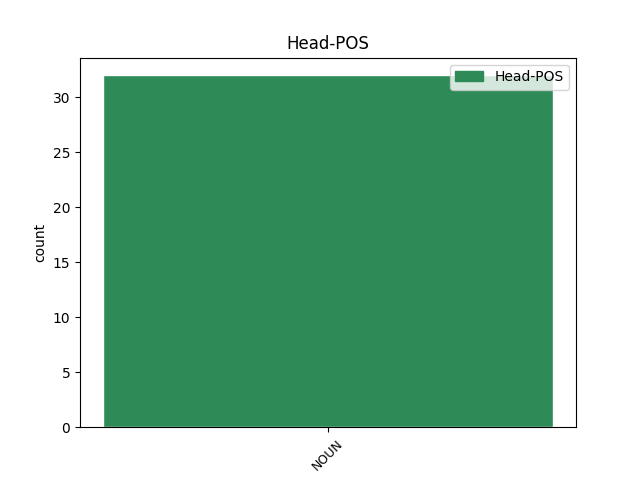
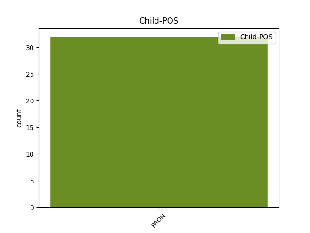

Distribution of features within this leaf



Agreement Rules sorted by frequency.
- When the dependent token is the modifer(mod) of the head token, and the head token is NOUN and the dependent token is PRON.
1 D' _ _ _ _ 0 _ _ _
2 iarr _ _ _ _ 0 _ _ _
3 sé _ _ _ _ 0 _ _ _
4 mar _ _ _ _ 0 _ _ _
5 bhean bean NOUN Noun Form=Len|Gender=Fem|Number=Sing 0 _ _ _
6 í í PRON Pers Gender=Fem|Number=Sing|Person=3 5 mod _ _
7 ar _ _ _ _ 0 _ _ _
8 a _ _ _ _ 0 _ _ _
9 hathair _ _ _ _ 0 _ _ _
10 . _ _ _ _ 0 _ _ _
Disagree Examples:
1 Má _ _ _ _ 0 _ _ _
2 bhíonn _ _ _ _ 0 _ _ _
3 súil _ _ _ _ 0 _ _ _
4 ag _ _ _ _ 0 _ _ _
5 an _ _ _ _ 0 _ _ _
6 saol _ _ _ _ 0 _ _ _
7 ar _ _ _ _ 0 _ _ _
8 eachtraí _ _ _ _ 0 _ _ _
9 , _ _ _ _ 0 _ _ _
10 nó _ _ _ _ 0 _ _ _
11 má _ _ _ _ 0 _ _ _
12 bhíonn _ _ _ _ 0 _ _ _
13 an _ _ _ _ 0 _ _ _
14 chosúlacht _ _ _ _ 0 _ _ _
15 féin _ _ _ _ 0 _ _ _
16 ar _ _ _ _ 0 _ _ _
17 an _ _ _ _ 0 _ _ _
18 scéal _ _ _ _ 0 _ _ _
19 gur _ _ _ _ 0 _ _ _
20 amhlaidh _ _ _ _ 0 _ _ _
21 atá _ _ _ _ 0 _ _ _
22 , _ _ _ _ 0 _ _ _
23 bíonn _ _ _ _ 0 _ _ _
24 sé _ _ _ _ 0 _ _ _
25 ina _ _ _ _ 0 _ _ _
26 chosaint _ _ _ _ 0 _ _ _
27 ag _ _ _ _ 0 _ _ _
28 daoine _ _ _ _ 0 _ _ _
29 - _ _ _ _ 0 _ _ _
30 más _ _ _ _ 0 _ _ _
31 lag _ _ _ _ 0 _ _ _
32 lúbach _ _ _ _ 0 _ _ _
33 an _ _ _ _ 0 _ _ _
34 chosaint cosaint NOUN Noun Case=NomAcc|Definite=Def|Gender=Fem|Number=Sing 0 _ _ _
35 in _ _ _ _ 0 _ _ _
36 amannaí _ _ _ _ 0 _ _ _
37 é é PRON Pers Gender=Masc|Number=Sing|Person=3 34 mod _ SpaceAfter=No
38 . _ _ _ _ 0 _ _ _
1 Is _ _ _ _ 0 _ _ _
2 furast _ _ _ _ 0 _ _ _
3 aithne aithne NOUN Noun Case=NomAcc|Gender=Fem|Number=Sing 0 _ _ _
4 é é PRON Pers Gender=Masc|Number=Sing|Person=3 3 mod _ SpaceAfter=No
5 . _ _ _ _ 0 _ _ _
1 '' _ _ _ _ 0 _ _ _
2 Ach _ _ _ _ 0 _ _ _
3 , _ _ _ _ 0 _ _ _
4 a _ _ _ _ 0 _ _ _
5 Bheartla _ _ _ _ 0 _ _ _
6 , _ _ _ _ 0 _ _ _
7 ní _ _ _ _ 0 _ _ _
8 hí í PRON Pers Gender=Fem|Number=Sing|Person=3 10 mod _ _
9 an _ _ _ _ 0 _ _ _
10 smólach smólach NOUN Noun Case=NomAcc|Definite=Def|Gender=Masc|Number=Sing 0 _ _ _
11 chéanna _ _ _ _ 0 _ _ _
12 - _ _ _ _ 0 _ _ _
13 '' _ _ _ _ 0 _ _ _
14 '' _ _ _ _ 0 _ _ _
15 An _ _ _ _ 0 _ _ _
16 smóilín _ _ _ _ 0 _ _ _
17 chéanna _ _ _ _ 0 _ _ _
18 - _ _ _ _ 0 _ _ _
19 chéanna _ _ _ _ 0 _ _ _
20 chéanna _ _ _ _ 0 _ _ _
21 - _ _ _ _ 0 _ _ _
22 a _ _ _ _ 0 _ _ _
23 Shéamais _ _ _ _ 0 _ _ _
24 . _ _ _ _ 0 _ _ _
1 Ní _ _ _ _ 0 _ _ _
2 raibh _ _ _ _ 0 _ _ _
3 an _ _ _ _ 0 _ _ _
4 dara _ _ _ _ 0 _ _ _
5 dóigh _ _ _ _ 0 _ _ _
6 air _ _ _ _ 0 _ _ _
7 , _ _ _ _ 0 _ _ _
8 ná _ _ _ _ 0 _ _ _
9 an _ _ _ _ 0 _ _ _
10 gual _ _ _ _ 0 _ _ _
11 a _ _ _ _ 0 _ _ _
12 chur _ _ _ _ 0 _ _ _
13 chun _ _ _ _ 0 _ _ _
14 na _ _ _ _ 0 _ _ _
15 farraige _ _ _ _ 0 _ _ _
16 , _ _ _ _ 0 _ _ _
17 sin _ _ _ _ 0 _ _ _
18 nó _ _ _ _ 0 _ _ _
19 a _ _ _ _ 0 _ _ _
20 chur _ _ _ _ 0 _ _ _
21 amach _ _ _ _ 0 _ _ _
22 san _ _ _ _ 0 _ _ _
23 Oileán _ _ _ _ 0 _ _ _
24 - _ _ _ _ 0 _ _ _
25 agus _ _ _ _ 0 _ _ _
26 nár _ _ _ _ 0 _ _ _
27 mhillteanach _ _ _ _ 0 _ _ _
28 an _ _ _ _ 0 _ _ _
29 bhreab breab NOUN Noun Case=NomAcc|Definite=Def|Gender=Fem|Number=Sing 0 _ _ _
30 é é PRON Pers Gender=Masc|Number=Sing|Person=3 29 mod _ _
31 an _ _ _ _ 0 _ _ _
32 áit _ _ _ _ 0 _ _ _
33 nach _ _ _ _ 0 _ _ _
34 raibh _ _ _ _ 0 _ _ _
35 fód _ _ _ _ 0 _ _ _
36 móna _ _ _ _ 0 _ _ _
37 ? _ _ _ _ 0 _ _ _
1 Siúd _ _ _ _ 0 _ _ _
2 é é PRON Pers Gender=Masc|Number=Sing|Person=3 5 mod _ _
3 an _ _ _ _ 0 _ _ _
4 ' _ _ _ _ 0 _ _ _
5 piet piet NOUN Noun Case=NomAcc|Gender=Fem|Number=Sing 0 _ _ _
6 ' _ _ _ _ 0 _ _ _
7 - _ _ _ _ 0 _ _ _
8 an _ _ _ _ 0 _ _ _
9 t-ábhar _ _ _ _ 0 _ _ _
10 trua _ _ _ _ 0 _ _ _
11 ba _ _ _ _ 0 _ _ _
12 mhó _ _ _ _ 0 _ _ _
13 dá _ _ _ _ 0 _ _ _
14 bhfaca _ _ _ _ 0 _ _ _
15 an _ _ _ _ 0 _ _ _
16 saol _ _ _ _ 0 _ _ _
17 riamh _ _ _ _ 0 _ _ _
18 : _ _ _ _ 0 _ _ _
19 corp _ _ _ _ 0 _ _ _
20 marbh _ _ _ _ 0 _ _ _
21 Dé _ _ _ _ 0 _ _ _
22 mar _ _ _ _ 0 _ _ _
23 a _ _ _ _ 0 _ _ _
24 bheadh _ _ _ _ 0 _ _ _
25 conablach _ _ _ _ 0 _ _ _
26 mallaitheora _ _ _ _ 0 _ _ _
27 , _ _ _ _ 0 _ _ _
28 agus _ _ _ _ 0 _ _ _
29 Máthair _ _ _ _ 0 _ _ _
30 Dé _ _ _ _ 0 _ _ _
31 - _ _ _ _ 0 _ _ _
32 Cúis _ _ _ _ 0 _ _ _
33 ár _ _ _ _ 0 _ _ _
34 nÁthais _ _ _ _ 0 _ _ _
35 - _ _ _ _ 0 _ _ _
36 ós _ _ _ _ 0 _ _ _
37 a _ _ _ _ 0 _ _ _
38 chionn _ _ _ _ 0 _ _ _
39 á _ _ _ _ 0 _ _ _
40 chaoineadh _ _ _ _ 0 _ _ _
41 . _ _ _ _ 0 _ _ _